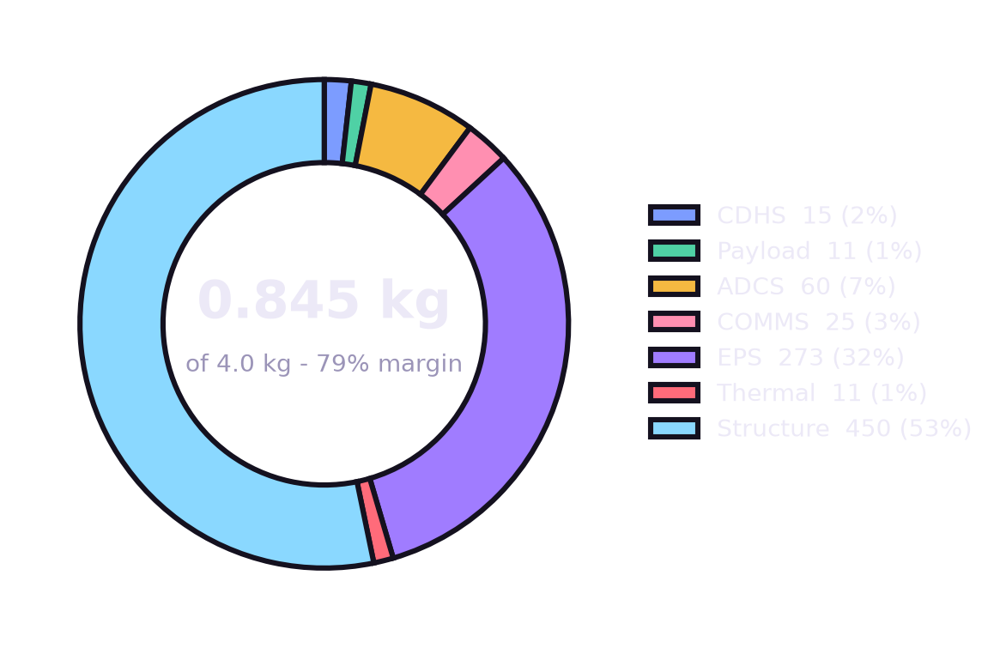
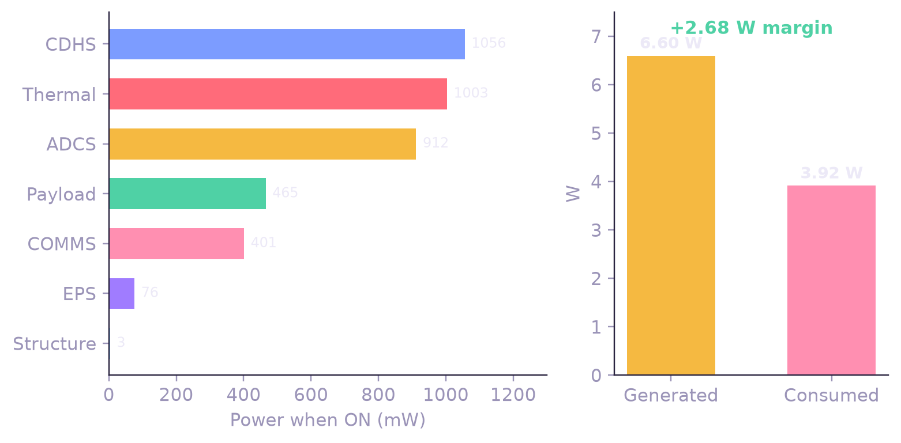
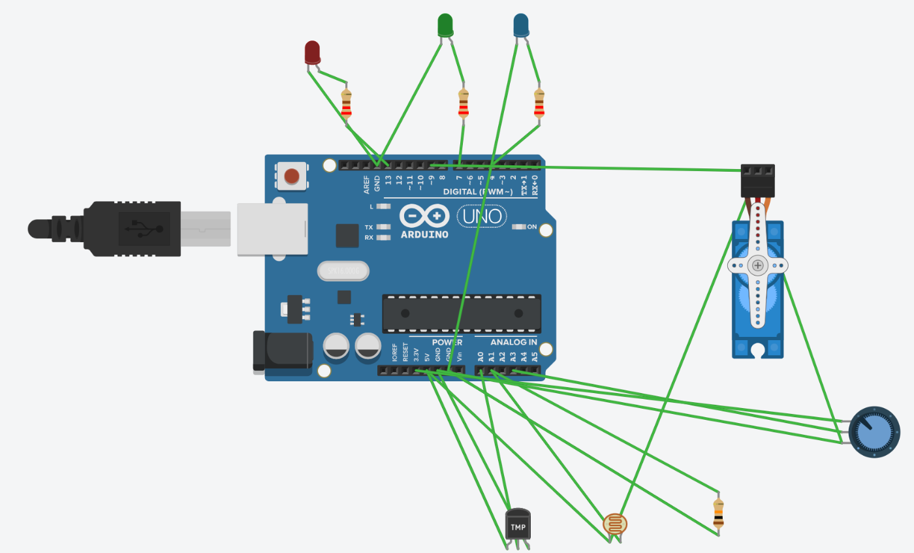
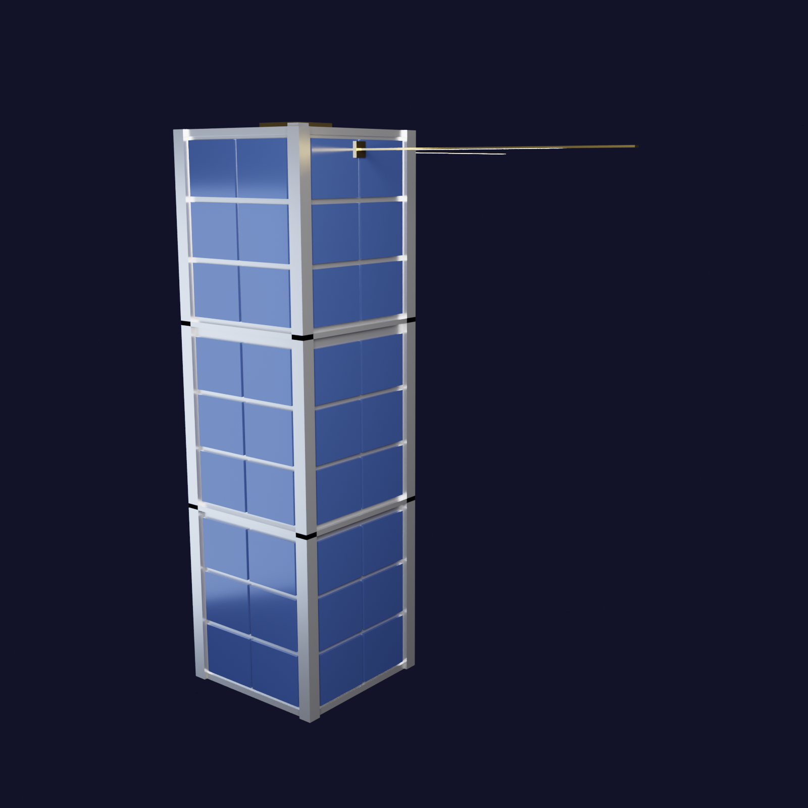
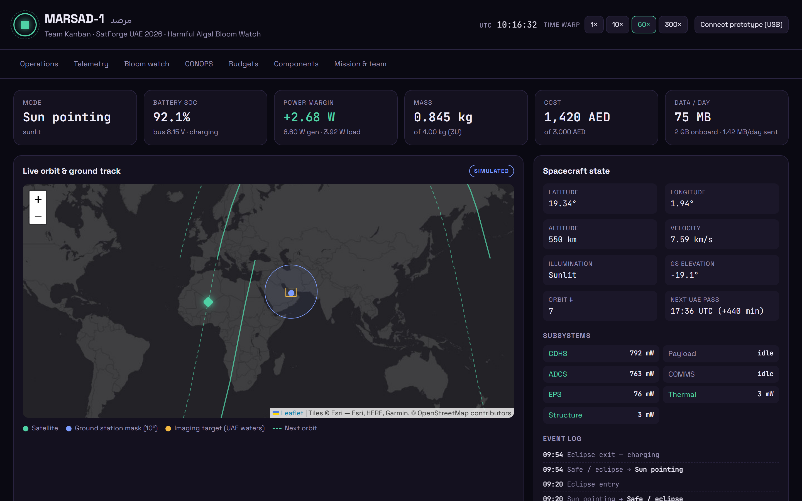

Mission Objective
Detect and map red tides and chlorophyll-a along the UAE coast of the Arabian Gulf and Gulf of Oman, giving desalination plants, fisheries and coastal authorities early warning. Blooms have forced UAE desalination plants to cut output and caused mass fish kills.
Success: one cloud-free multispectral image of UAE waters per day and a bloom map to the ground within 24 h, for 6 months.
550 km SSOi = 97.6°, 10:30 LTDN
95 minorbit · 15 per day
12 monthsdesign lifetime
CONOPS · one orbit
Sun-pointing
40 min
Imaging
10
Downlink
10
Safe / eclipse
35 min
Sun-pointing magnetorquers hold attitude, 6 cells charge the 25 Wh pack
Nadir imaging OV5640 + AS7341 over the Gulf, onboard NDCI
Ground pass LoRa 433 MHz alerts to Abu Dhabi GS (10° mask)
Safe / eclipse heater keeps battery > 5 °C, minimal loads
Image + spectra→Onboard NDCI→Bloom alert (kB)→LoRa pass→Dashboard
Mass Budget

Volume 501 of 3000 cm³ · Cost 1,420 of 3,000 AED · code: github.com/4waiz/marsad-1-dashboard
Power Budget

3.02 Wh used per orbit · 6 × 1.1 W cells · 2S Li-ion 7.4 V 3.4 Ah (25 Wh)
Subsystems / Components
- CDHS
ESP32-S3 flight computer · 32 GB microSD
- PAYLOAD
OV5640 5 MP camera · AS7341 11-ch spectral sensor
- ADCS
ICM-20948 9-DoF IMU · 3-axis magnetorquers · NEO-M8N GPS
- COMMS
SX1278 LoRa 433 MHz · deployable tape monopole
- EPS
6 solar cells · 2S 18650 pack · CN3791 MPPT + BMS · MP1584 bucks · INA219
- THERMAL
BME280 + DS18B20 sensors · Kapton battery heater
- STRUCTURE
3U Al-6061 frame, PC/104 stack · 0.845 kg total
- DATA
75 MB/day captured · 1.42 MB/day downlinked
Tinker Circuit

A0TMP36 battery temp
A1LDR sun / eclipse
A3Battery-voltage pot
D13Heater LED
D7Imaging LED
D4Downlink LED
D9Antenna servo
tinkercad.com/things/cY2kWDnTdZB
3D Design

CubeSat Design Spec 3U envelope: 100 × 100 × 340.5 mm, four 8.5 mm rails, 1U separator rings.
72 body-mounted cells on 4 faces, nadir camera & spectral window, GPS patch, kill switches and two deployed 433 MHz tape antennas.
tinkercad.com/things/4Qi0WBiqTus
Dashboard

Live orbit, power, thermal & bloom-alert telemetry
4waiz.github.io/marsad-1-dashboard
KEY LEARNINGS
Budgets drive designThe power budget set the array at 6 cells and forced a heater duty cycle in eclipse.
Downlink is the bottleneck75 MB/day captured vs 1.42 MB/day over LoRa, so bloom detection runs onboard.
Mass is easy, volume isn't0.85 kg of 4 kg, but layout, cabling and heat paths fill a 3U fast.
Simulate firstTinkercad let us test the mode logic and wiring before buying parts.
One source of truthA shared live dashboard kept four subsystem owners in sync.